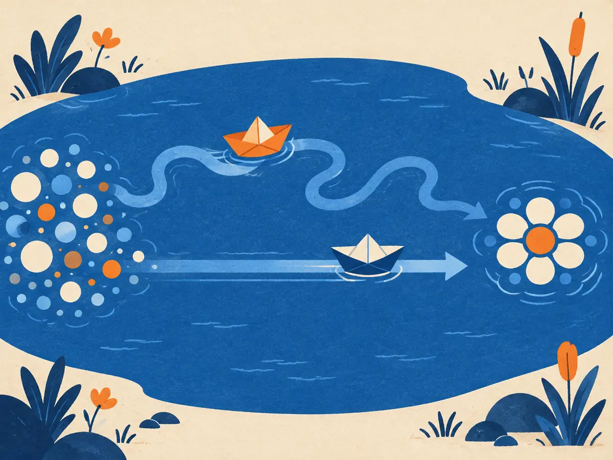

Flow matching & rectified flow
Diffusion walks from noise to data along a winding road. Flow matching asks a simpler question: what if each training example travelled in a straight line? The answer is a cleaner objective, used by Stable Diffusion 3 and many 2025–26 image and video models, and a path toward generating images in a handful of steps.
By the end you can
- Write the flow-matching interpolation and its velocity target, and compute both for a pair of points.
- Sample with Euler steps and explain why one step fails on the plain model.
- Explain reflow, consistency models and distillation as routes to 1–4 step generation.
Guess first. Wrong guesses help the right answer stick.
You may move a point from A to B in one big step, following the direction you face at A. When does that land exactly on B?
- When the path from A to B is a straight line
- Always
- Only when A and B are close to the origin
- Never
Some 2024–26 image models generate in 1 to 4 steps instead of 25–50. Usually that's because…
- They are much smaller networks
- They skip the text encoder
- They were distilled or straightened from a many-step model, so each step can cover more ground
- They generate at lower resolution and upscale
From noise to data along a path
G1.3 ended with an idea from Song et al. (2021): a diffusion model also defines a deterministic ODE, a velocity field that carries noise smoothly onto data. Models that generate by integrating an ODE are called continuous normalizing flows (Chen et al., 2018, "Neural ODEs"), but they used to be expensive to train, because every training step simulated the ODE.
In 2022, three groups independently found a simulation-free way to train such a flow: flow matching (Lipman et al.), rectified flow (Liu, Gong & Liu, "Flow Straight and Fast") and stochastic interpolants (Albergo & Vanden-Eijnden). The simplest version picks a noise sample $x_0 \sim \mathcal{N}(0, I)$ and a data sample $x_1$, and joins them with a straight line:
$$x_t = (1 - t)\,x_0 + t\,x_1, \qquad t \in [0, 1]$$At $t = 0$ you're at the noise, at $t = 1$ at the data. Moving along this line at constant speed means the velocity is the same everywhere on it:
$$\frac{dx_t}{dt} = x_1 - x_0$$Generation then means solving the ODE $\frac{dx}{dt} = v_\theta(x, t)$ from a fresh noise sample at $t = 0$ to $t = 1$, where $v_\theta$ is a network trained to predict that velocity. One warning before you read papers: conventions differ. Stable Diffusion 3 (Esser et al., 2024) runs time the other way, with $t = 0$ at the data and $t = 1$ at the noise. The math is identical with $t$ flipped.
In flow matching with $x_t = (1-t)\,x_0 + t\,x_1$, what velocity does a single training pair ask the network to predict?
- The noise $x_0$ alone
- The constant $x_1 - x_0$, pointing from the noise to the data
- $x_t$ itself
- A velocity that grows with $t$
Training and sampling
The flow-matching loss is plain regression, just like DDPM's:
$$\mathcal{L}_{\text{FM}} = \mathbb{E}_{t,\,x_0,\,x_1}\Big[\big\|\,v_\theta(x_t, t) - (x_1 - x_0)\big\|^2\Big]$$- Sample a data point $x_1$, a noise point $x_0 \sim \mathcal{N}(0, I)$ and a time $t$ (uniform in $[0,1]$ is the simplest; SD3 favoured middle times with a logit-normal distribution).
- Form $x_t = (1-t)\,x_0 + t\,x_1$.
- Predict $v_\theta(x_t, t)$, compare with $x_1 - x_0$, take a gradient step.
A subtle point: many different pairs pass through the same $x_t$, each wanting a different velocity, so no network can match them all. The loss is minimized by the average: $v^*(x, t) = \mathbb{E}[x_1 - x_0 \mid x_t = x]$. Lipman et al. and Liu et al. proved that following this average velocity field still carries the whole noise distribution onto the whole data distribution. You get a valid generator, but its paths are no longer the straight training lines; they bend where lines cross, as the animation showed.
Flow matching and diffusion are close relatives: with Gaussian noise, both learn the same kind of object and can be converted into each other. They differ in the path between noise and data and in how the loss weights different times. Flow matching's appeal is simplicity: no noise schedule to design, one line of interpolation, one regression target.
Worked example
Noise $x_0 = (0.4, -1.2)$, data $x_1 = (1.0, 0.5)$, at $t = 0.25$:
- $x_t = 0.75\,(0.4, -1.2) + 0.25\,(1.0, 0.5) = (0.30, -0.90) + (0.25, 0.125) = (0.55, -0.775)$
- Target velocity: $x_1 - x_0 = (0.6, 1.7)$
- Check: one Euler step of size $1 - t = 0.75$ with that velocity lands at $(0.55 + 0.45,\; -0.775 + 1.275) = (1.0, 0.5) = x_1$. On a straight path, one step is exact.
Noise $x_0 = (-0.8, 0.6)$, data $x_1 = (1.2, 0.2)$, at $t = 0.5$.
- First component of $x_t$:
- First component of the target velocity $x_1 - x_0$:
- After an Euler step of $\Delta t = 0.25$, the first component is
Sampling with Euler steps
To sample, start at $x_0 \sim \mathcal{N}(0, I)$ and repeat the simplest ODE solver, an Euler step, from $t = 0$ to $t = 1$:
$$x_{t + \Delta t} = x_t + \Delta t \; v_\theta(x_t, t)$$With $N$ steps, $\Delta t = 1/N$ and you make $N$ network calls. If the paths were perfectly straight, $N = 1$ would be exact. They aren't. At $t = 0$ the noise tells you nothing about which data point you'll end up at, so the average velocity is $v^*(x_0, 0) = \mathbb{E}[x_1] - x_0$: one step sends every sample to the mean of the data. That is the toy version of the blurry "average image" one-step models produce. Try it:
Playground: how many steps?
100 samples from the exact flow-matching velocity of the toy data, integrated with $N$ Euler steps. Blue lines trace 12 of the paths.
On this toy, a handful of steps gets most of the way and 16 or so is indistinguishable from the exact flow. Real image models use better solvers than Euler (Heun's method, DPM-Solver-style multistep methods) and typically 20–50 steps for full-quality flow or diffusion sampling, though the right number depends on the model.
Why does a single Euler step from pure noise send every sample to the mean of the data?
- At $t = 0$ the noise carries no information about the destination, so the learned (average) velocity is $\mathbb{E}[x_1] - x_0$
- Because Euler steps always shrink toward the origin
- Because the network is undertrained
- Because the data distribution has only one mode
Fewer steps: reflow, consistency and distillation
The paths bend because training pairs were random: any noise point might be paired with any image, so lines cross. Liu et al. proposed reflow: after training, run the flow from many noise samples $z$ and record where each one ends, $\hat x = \text{ODE}(z)$. Then retrain on the new pairs $(z, \hat x)$. These pairs come from non-crossing flow trajectories, so their straight lines cross far less, and the retrained "2-rectified flow" has much straighter paths. In the ideal limit one Euler step reaches the data. Reflow can be repeated, though each round costs a full data-generation pass and can slowly accumulate errors.
InstaFlow (Liu et al., 2023) used reflow plus distillation to make a one-step version of Stable Diffusion. More broadly, the rectified-flow objective went mainstream: Esser et al. (2024) compared diffusion and flow formulations at scale and built Stable Diffusion 3 on rectified flow with logit-normal time sampling; Black Forest Labs describes its FLUX.1 models (2024) as rectified-flow transformers; and many open image and video models released in 2025–26 report flow-matching objectives. Details of closed models are often not published.
Explain like I'm 5

Two paper boats start among scattered bubbles and must reach the flower shape on the other side of the pond. The first boat follows a wiggly current: it has to be nudged again and again, or it misses.
The second boat rides a straight current. Point it once, let go, and it arrives first. Flow matching tries to build straight currents, and reflow straightens wiggly ones, so the boat needs fewer nudges (steps).
Where it breaks: real boats can all cross straight to their own spot. A model's currents come from averaging, so where many boats' routes cross, the current bends, and only extra work (reflow) untangles them.
Even fewer steps: consistency and distillation
Straighter paths are one route to speed. Others train a fast "student" from a slow "teacher":
- Progressive distillation (Salimans & Ho, 2022): train a student to do in one step what the teacher does in two; repeat, halving the step count each round.
- Consistency models (Song, Dhariwal, Chen & Sutskever, 2023): learn a function $f_\theta(x_t, t)$ that maps any point on an ODE trajectory straight to the trajectory's clean end point. Points on the same trajectory must map to the same output (self-consistency), which allows 1–2 step sampling. Latent Consistency Models (Luo et al., 2023) brought this to Stable Diffusion with 2–4 steps.
- Adversarial distillation (ADD, Sauer et al., 2023; G1.2): a discriminator keeps 1–4 step outputs sharp, as in SDXL Turbo.
These few-step models made near-real-time image generation practical. The usual price is some loss of diversity or fine detail compared with the full sampler, and less flexibility with classifier-free guidance; how much depends heavily on the method and model.
What does a consistency model learn?
- A velocity field to integrate with many Euler steps
- A map from any point on an ODE trajectory directly to that trajectory's clean end point
- A discriminator for real vs fake images
- A better noise schedule
Why do flow-matching models still need several sampling steps even though they are trained on straight lines, and what does reflow do about it?
Which is the flow-matching training loss (with $x_t = (1-t)x_0 + t x_1$)?
- $\|\varepsilon - \varepsilon_\theta(x_t, t)\|^2$ with $x_t = \sqrt{\bar\alpha_t}x_1 + \sqrt{1-\bar\alpha_t}\varepsilon$
- $-\log D(G(z))$
- $\|v_\theta(x_t, t) - (x_1 - x_0)\|^2$
- $\|x_1 - x_0\|^2$ alone
A flow model is sampled with 4 Euler steps from $t = 0$ to $t = 1$. How many network evaluations does that take, and what is $\Delta t$?
- 4 evaluations, $\Delta t = 0.25$
- 1 evaluation, $\Delta t = 1$
- 8 evaluations, $\Delta t = 0.125$
- 1000 evaluations, $\Delta t = 0.001$
From G1.3: DDIM made diffusion sampling faster without retraining. How does it relate to this lesson?
- DDIM is a GAN
- DDIM straightens paths by re-pairing noise and data
- DDIM is a consistency model
- DDIM is a deterministic ODE-style sampler, the same kind of solver you use for a flow model; both trade more steps for accuracy
Which statement about Stable Diffusion 3 is right?
- It is a GAN
- It is trained with a rectified-flow objective (Esser et al., 2024), with time running from data at $t = 0$ to noise at $t = 1$
- It generates images one pixel at a time
- It uses no text encoder
Key takeaways
- Flow matching joins noise and data with straight lines, $x_t = (1-t)x_0 + t x_1$, and regresses the velocity $x_1 - x_0$.
- The learned field is the average velocity; because random pairs cross, its paths curve, so sampling still needs several ODE steps.
- One Euler step from noise lands on the data mean; more steps follow the curves.
- Reflow re-pairs noise with flow end points to straighten paths; consistency models and (adversarial) distillation reach 1–4 steps.
- Rectified flow underlies SD3 and, per their makers, FLUX.1 and many 2025–26 open image and video models.
Train a flow-matching model on the two-moons toy in PyTorch, then sample it with 1, 4, 16 and 64 Euler steps and measure the difference. Trains in well under a minute on a CPU.
Add this lesson's cards to your spaced-review deck.